Notre projet
L’objectif, simplifier l'adoption et la gestion des refuges animaliers
- Le problème, les refuges animaliers sont débordés, manquent de temps et d'outils pour gérer efficacement les tâches administratives et les adoptions.
- La solution, création de Waap, une plateforme qui digitalise la gestion des refuges, automatise les tâches et facilite l'adoption responsable.
- L’impact, Waap contribue à une meilleure protection des animaux et à la réduction du nombre d'abandons.
